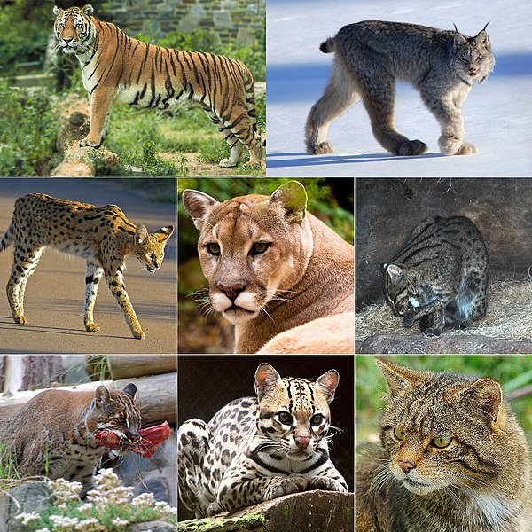

Kočkovití (hovorově kočky) jsou čeledí řádu šelem. Dělí se na dvě recentní podčeledi: velké kočky (Pantherinae) a malé kočky (Felinae). První kočky se objevily během oligocénu, přibližně před 25 miliony let. Obě recentní podčeledi se od sebe oddělily asi před 11,5 miliony lety. Kočkovité šelmy jsou skvěle adaptovaní lovci, uzpůsobení k lovu ze zálohy.
V současnosti žije na Zemi 41 druhů těchto šelem. Mezi nejznámější kočky patří bezpochyby kočka domácí, jejíž soužití s člověkem je známé již 4 000 až 7 000 let. Divocí příbuzní kočky domácí stále žijí v Africe a západní Asii, ale poničené životní prostředí značně omezilo plochy jejich výskytu. Jiné velmi známé druhy kočkovitých zahrnují velké kočky jako je lev, tygr, levhart, jaguár a množství malých koček jako například ocelot, rys ostrovid nebo puma americká. Za nejbližší příbuzné koček se považují asijští linsangové rodu Prionodon dříve řazení k cibetkám.

Z celého řádu šelem se právě kočkovití nejvíce drží masožravého způsobu života – jsou na příjmu masa zcela závislí. Někdy se jim proto říká hypermasožravci. Jejich tělesná stavba je plně přizpůsobená lovu jiných zvířat. Mají pružné a svalnaté tělo, čelisti a zuby určené k silnému skusu, flexibilní přední končetiny zakončené ostrými zatažitelnými drápy (všichni kromě geparda) sloužícími k přidržení kořisti, zadní končetiny umožňující prudké zrychlení a skoky a srst tvořenou kamuflážními barevnými odstíny. Ze smyslů je co nejlépe vyvinut především zrak, jenž je určen k zachycení pohybu a k dobrému vidění za era a tmy a následně také sluch. Co se týče chování, je pro ně typický samotářský způsob života, s výjimkou lvů a částečně gepardů
Zdroj: Wikipedia